Audio System - Poor AM/FM Band Radio Reception
91 07 06May 9, 2007
Condition
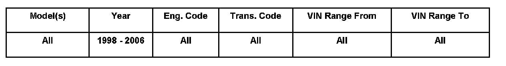
Vehicle Information
2010411 Supersedes T.B. Group 91 number 07-05 dated April 25, 2007 due to Touareg parts statement update.
Radio, Reception Diagnosis
Poor radio reception.
Technical Background
Assist with Radio Reception diagnosis.
Production Solution
No production change required.
Service
For concerns of poor radio reception:
Use the following as a guide for trouble shooting.
Tip:
This Technical Bulletin is divided into four sections:
Section 1: Includes antenna systems by vehicle.
Section 2: Includes radio antenna system diagnosis procedures for AM/FM concerns using internal radio diagnostics.
Section 3: Includes antenna lead diagnosis.
Section 4: Antenna cables
Perceived reception issues may be a result of environmental factors.
Reception may be diminished in certain areas due to power wires, buildings and/or overpasses.
Aftermarket window tint may interfere with reception.
In cases that are questionable, locate identical vehicle and verify concern (if the like vehicle is same, condition may be normal).
Section 1 - Antenna systems by vehicle
Tip:
For more detail see Repair Manual Group 91- Communication, of the vehicle you are working on, in ElsaWeb.
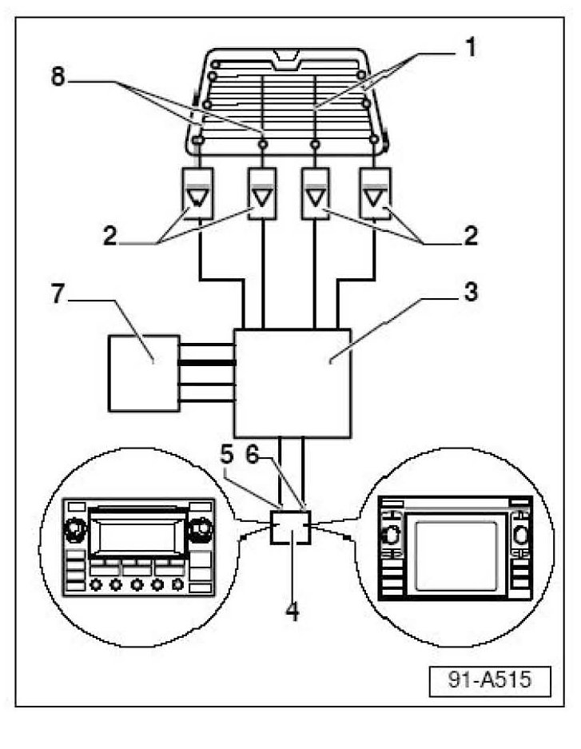
Passat (W8 only)
Antenna Selection Control Module -J515- (Diversity box) -3-:
Location, Wagon: behind left luggage compartment side trim, below rear side window.
Location, Sedan: under rear parcel shelf.
Antennas:
All models use four antennas -1-, -8-.
Location, Wagon: Integrated with rear side windows.
Location, Sedan: Integrated with rear window.
Antenna amplifiers:
All models use four antenna amplifiers -2-.
Location, Wagon: 2 each behind left and right luggage compartment side trim, below rear side windows.
Location, Sedan: 2 under rear parcel shelf and 1 each behind left and
right rear D-pillar trim.
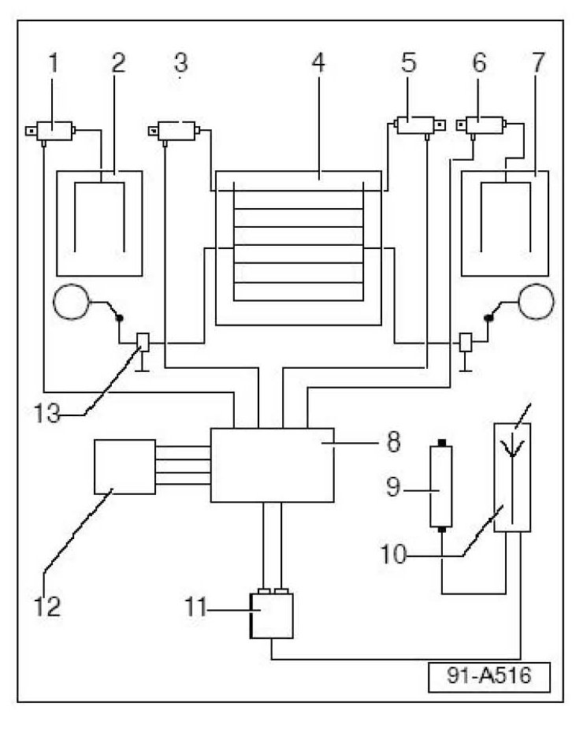
Touareg
Antenna Selection Control Module -J515- (Diversity box)
All models use an Antenna Selection Control Module -J515- item -8-.
Location, Behind rear section of molded headlining.
Antennas
All models use four antennas items -2-, -4- (qty. 2) & -7- .
Antennas (R130, R131) are integrated into rear hatch glass.
Antenna R11 in left rear side glass.
Antenna R93 in right rear side glass.
Antenna amplifiers
All models use four antenna amplifiers items -1-, -3-, -5- & -6-.
Item 1 - Antenna Amplifier 1 -R24- (for AM and FM reception). Above left
side window.
Item 3 - Antenna Amplifier 2 -R111- (for FM reception). In upper section of rear lid.
Item 5 - Antenna Amplifier 3 -R112- (for FM reception). In upper section
of rear lid.
Item 6 - Antenna Amplifier 4 -R113- (for FM reception). Above right side
window.
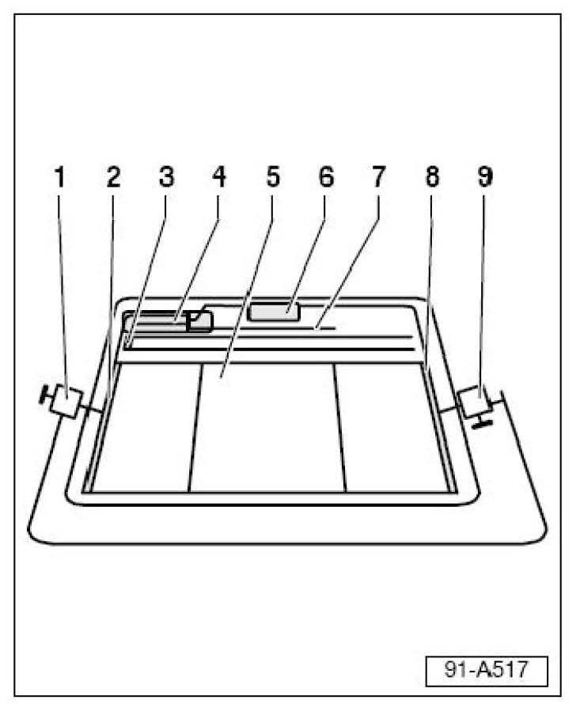
Phaeton
Antenna Selection Control Module -J515- (Diversity box)
All models use an Antenna Selection Control Module -J515- item -4-.
Location: Above rear glass under headliner.
Antennas
All models use four antennas.
Antennas -2-, -7- and -8- (for FM reception). Integrated into rear glass -5-.
Antenna -3- (for AM and FM reception). Integrated into rear glass -5-
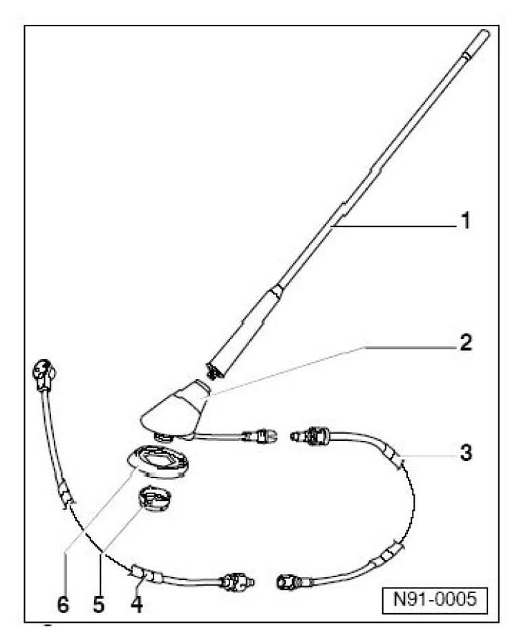
Jetta / Golf / Passat (non W8) - Antenna system
All models use External amplified antenna mast -1-.
Section 2 - Radio antenna system diagnosis through radio unit
Premium VI radios are capable of signal diagnosis through operating internal diagnostics of the radio unit.
All models except Touareg and Phaeton:
^ Select AM or FM.
^ Press and hold the mix button (black arrow).
Screen will appear that shows "Service Test mode" (white arrow).
^ Press mix button briefly.
Test one indicates current antenna status, i.e. ON or OFF (arrow).
^ Press mix button briefly again.
Screen displays strength of signal (LEVEL) in bar graph form (can be
used for AM and FM).
^ Press mix button briefly again.
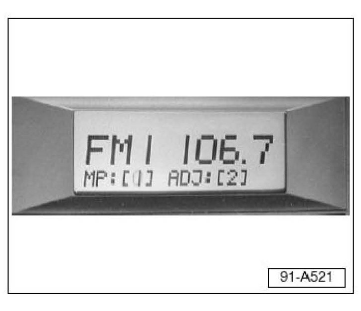
Screen indicates number of stations broadcasting close to frequency
band of selected station.
As the number increases for [mp] and [adj], static and signal crossing will increase.
To exit service mode:
^ Press and hold the mix button or switch radio OFF then back ON.
Navigation units
No internal diagnosis functions. Continue to antenna lead diagnosis.
Section 3 - Antenna Lead Diagnosis
After initial radio diagnosis using internal service functions, use the following procedures:
^ Locate antenna lead/s from radio at system end-point, i.e. diversity box or antenna mast base.
^ Check for proper connection. (follow steps for your type of system).
^ For all systems, locate cable end-point at either diversity box or antenna mast base.
^ Disconnect cable from either diversity box or antenna mast base.
^ Carefully ground center wire in cable to chassis.
If reception returns:
Cable and radio are ok.
If reception does not return:
Problem is located further forward in the system.
For problems forward of the antenna system:
^ Continue with Section 3a.
For problems at antenna system:
^ Skip to Section 3b.
For problems at antenna systems:
Tip:
All checks should be done outdoors away from buildings.
Section 3a - Problems forward of antenna system
^ First verify connection at Radio (check for bent or crushed connections and proper fit).
If all connections appear ok:
^ Ground antenna lead at radio or attach external antenna mast to radio unit (check for reception).
If reception returns:
^ Problem is located between radio and antenna.
^ Check connections near center console.
If connections are OK:
^ Check resistance of cable from end to end.
If More than .4 ohms:
^ Replace cable.
If reception does not return:
^ Replace radio unit.
Section 3b - Problems at antenna system, Diversity Antenna (Touareg, Passat W8)
If concern is only AM poor / no reception:
Locate AM antenna amplifier.
Touareg: located above left side window.
Passat W8: Sedan above rear window.
Passat Wagon: located on left rear window.
^ Check for proper connections at amplifier both from diversity box and to glass.
If connection issue is at glass or on glass:
^ Glass must be replaced.
If connection problem to amplifier:
^ Repair connection (replace cable or amplifier).
If no apparent connection problems:
^ Replace amplifier.
If concern is poor FM reception:
^ Disconnect all amplifiers, tune radio to high-powered station for your area.
^ Connect amplifiers one at a time.
If reception is indicated:
^ Disconnect that amplifier and move on to next amplifier.
If at any point in reconnecting amplifiers there is a loss in reception and there are no connection issues:
^ Replace that amplifier and check again.
If there is no reception change when disconnecting and reconnecting all amplifiers:
^ Replace diversity/antenna selection box.
Jetta / Golf / Passat (non W8) - Antenna system (Amplified Antenna Mast)
^ Check connections at antenna base.
^ Check for corrosion at mounting.
If corrosion is found:
^ Clean mount and apply anti-seize gel to mounting.
If concern is no AM and/or little or poor AM/FM reception:
^ Replace antenna base.
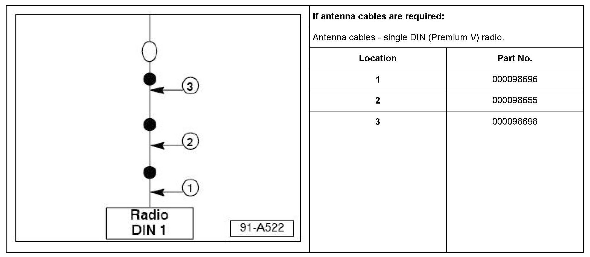
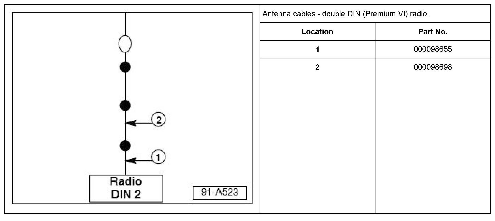
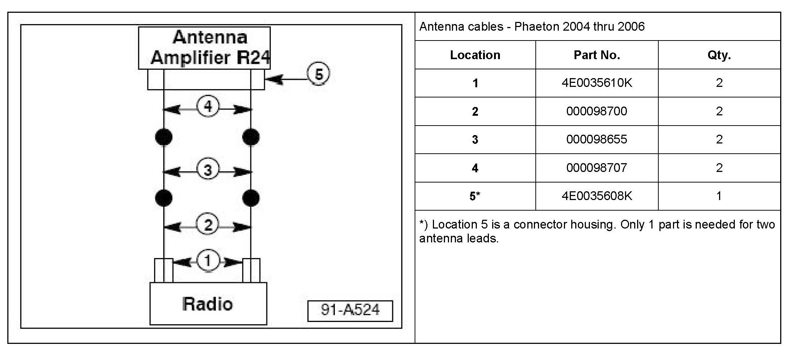
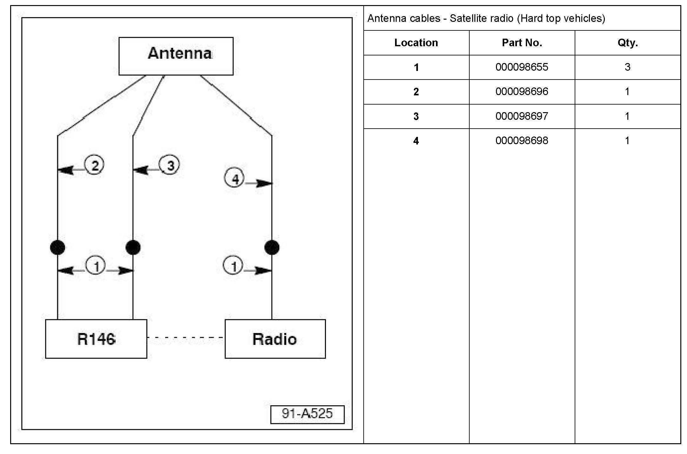
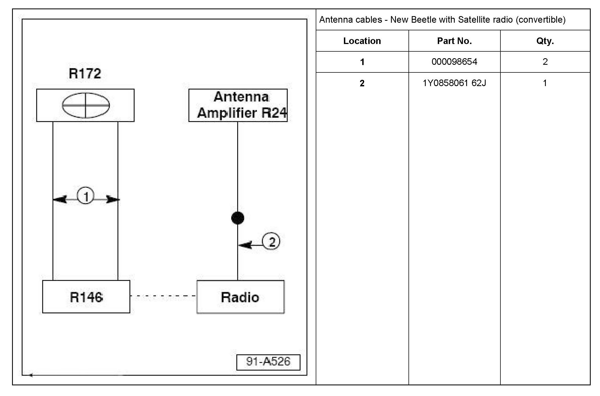
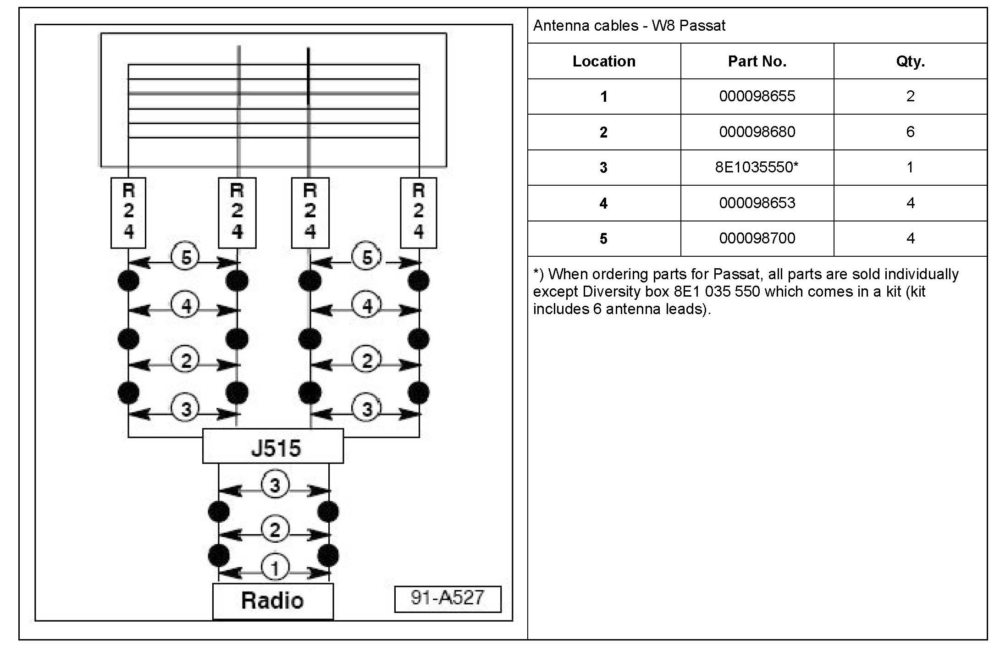
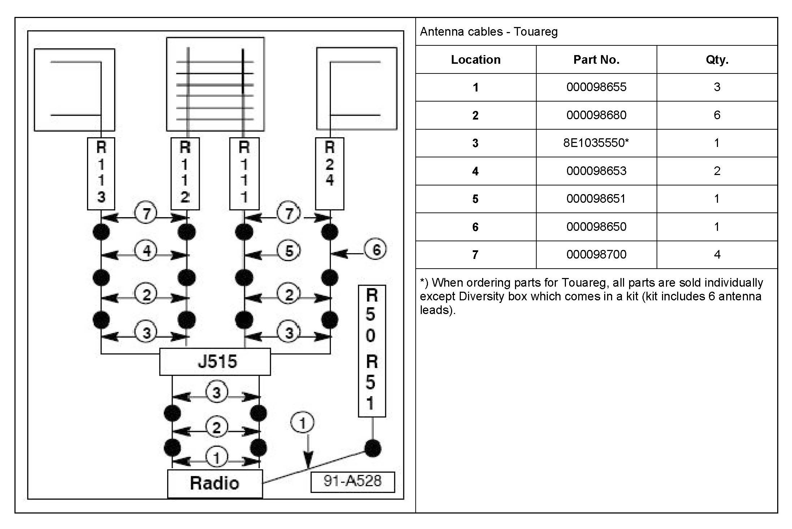
Section 4 - Antenna cables
Warranty
Information only.
Required Parts and Tools
Tip:
Part number(s) are for reference only.
See Repair Manual for Special Tools required.
Additional Information
All part and service references provided in this Technical Bulletin are subject to change and/or removal.
Always check with your Parts Dept. and Repair Manuals for the latest information.